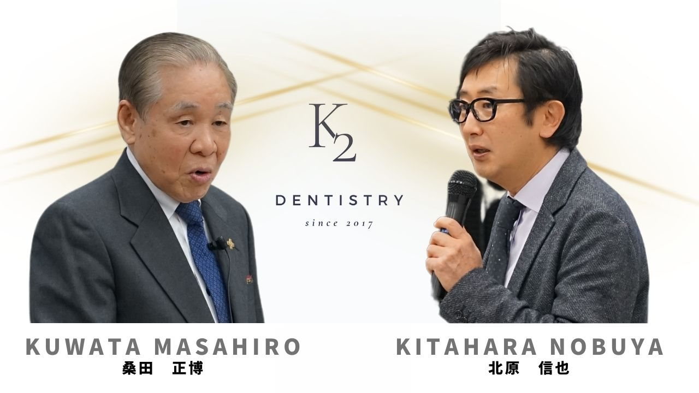

ABOUT
K2について
審美と機能の融合を、歯科治療におけるグローバルな視点で学ぶスタディグループです。
初めての方へ
K2は、K.I.M（Kuwata Institute Millennium）-Tokyo と K-ing（Kitahara Academy）が統合したスタディグループです。桑田正博先生は名誉顧問を務めていらっしゃいました。
K.I.Mの目的「桑田先生の咬合理論を学び、臨床で実践し、世界に普及すること」と、K-ingの精神「よく学び、よく遊ぶ」が融合した、アットホームでありながら本質的な勉強ができるセミナーです。
私たちは、人々の健康に寄与するために歯科という分野の “Roots” を伸ばしていくことを使命と捉え、それは先人たちの築いてきた “Roots” を学び、時代につなげていくことだと考えています。
桑田先生の教えは「無理なく・無駄なく・難しくなく」をモットーとした修復治療のベースになるもので、セミナーはそのベースを踏まえて日常臨床にすぐに活かせる内容となっています。

HONORARY ADVISER
桑田正博 先生
歯科技工士。ボストン大学客員教授。PFMクラウン（金属焼付ポーセレン：通称メタルボンド）の共同開発者であり、アメリカで100年以上続く Academy of Prosthodontics（アメリカ歯科補綴学会）の名誉会員。世界中に5,000人を超える教え子を持ちます。K2の名誉顧問を務めていらっしゃいました。
DIRECTOR
北原信也 先生
K2の主宰。アメリカの学会や日本においても著名な臨床家として、審美と機能を学ぶ場をつくっています。ハンズオンコースのコースディレクターも務めます。
CONCEPT
機能性と審美性が
正しく融合した歯科医療
仕事も、勉強も、遊びも、適切なバランスで。K.I.Mの「学び、実践し、世界に普及する」と、K-ingの「よく学び、よく遊ぶ」を受け継いでいます。
MISSION
私たちの存在意義
MISSION 01
桑田理論を日本から世界に発信していく
MISSION 02
桑田イズムを継承し啓蒙する
HISTORY
沿革
- 2007K.I.M（Kuwata Institute Millennium）-Tokyo 発足。歯科技工士を中心に桑田先生の咬合理論を学ぶ勉強会
- 2008K-ing（北原塾）発足。審美と補綴を中心に学ぶ勉強会
- 2017K-ing と K.I.M が統合し、K2 が発足。統合を機にハンズオンコースを新設
会員数 約70名